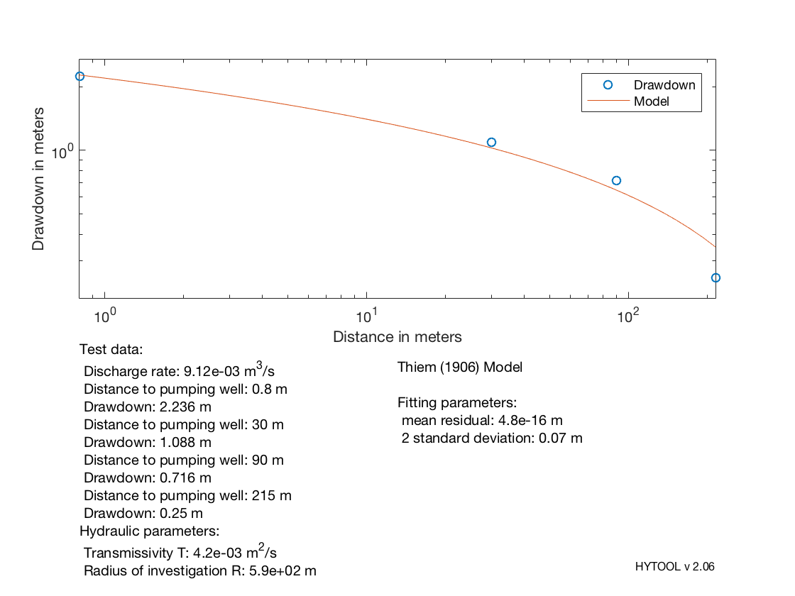

Data set
The data set for this example comes from the following reference: Kruseman and de Ridder (1994), Analysis and Evaluation of Pumping Test Data. International Institute for Land Reclamation and Improvement, Wageningen. The Netherlands. 377 pp. Data set from table 3.2 pp. 56-60
Contents
General Information: Localisation: Test performed in 'Oude Korendijk' site, south of Rotterdam, The Netherlands (Wit 1963). Geology : The well was screened in a aquifer (coarse sand with some gravels) interbedded with two confining layers.
The fitted Thiem method requires to know the pumping rate and the drawdown in at least two observation wells located at different distances from the pumping well.
h0 = 0; % =0: confined; >0: unconfined
| HYTOOL Demo |
Use of the thm_fit function
We can then use the thm_fit function (Holzbecher) and compute the transmissivity :
T = 4.2e-3 m2/s
T = thm_fit (q,h0,r',s')
T =
0.0042
 The result found by Kruseman and de Ridder was: T = 4.5e-3 m2/s